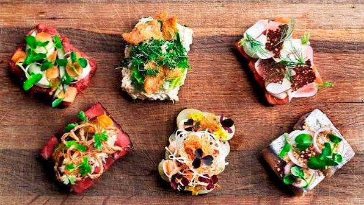
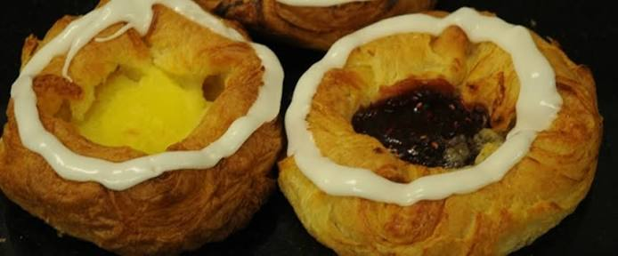

CityLoop Quest Copenhague


Le smørrebrød commence par une tranche de pain de seigle sombre, dense et légèrement acide. Sur cette base viennent hareng mariné, rôti de porc, pâté, œuf, crevettes ou pomme de terre, toujours ordonnés avec attention. Ce repas ouvert n’est pas un sandwich refermé à la hâte : il se mange à la fourchette et au couteau, souvent selon un ordre allant du poisson vers la viande et le fromage.

Le hareng possède de nombreuses vies. Il peut être mariné au vinaigre, au curry, à l’oignon ou à l’aneth, puis accompagné de pain, graisse, œuf et aquavit. Cette tradition rappelle l’importance historique de la Baltique et des techniques de conservation. Les goûts sucrés-salés surprennent parfois, mais ils sont équilibrés par l’acidité et la force du seigle.
Le flæskesteg, rôti de porc à la couenne croustillante, apparaît lors des repas familiaux et dans certains sandwiches. Les frikadeller, boulettes poêlées, constituent une nourriture quotidienne plutôt qu’un plat de cérémonie. Le hot-dog danois, vendu dans les pølsevogne depuis le début du XXe siècle, combine saucisse, moutarde, rémoulade, oignons crus et frits, cornichons et parfois une couleur rouge spectaculaire.
Les pâtisseries appelées “danish” à l’étranger portent ici le nom de wienerbrød, pain viennois. Des boulangers autrichiens auraient contribué à populariser la pâte feuilletée au XIXe siècle pendant une grève des ouvriers danois. Kanelsnegle à la cannelle, spandauer à la crème et tebirkes aux graines de pavot montrent combien chaque boulangerie possède ses préférences.

Le renouveau gastronomique nordique a remis en valeur produits sauvages, fermentations, algues et saisons, mais la cuisine de Copenhague ne se limite pas aux restaurants étoilés. Un déjeuner de smørrebrød, une saucisse au kiosque et un gâteau partagé avec du café racontent mieux la ville ordinaire. Regardez toujours les portions avant de commander plusieurs tartines : leur apparente finesse peut être trompeuse.